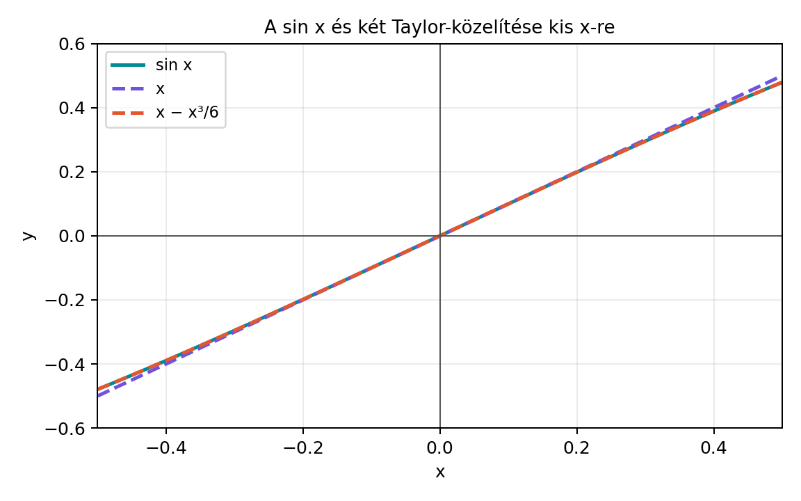

13.4 A Taylor-formula alkalmazásai:
közelítések a fizikában és határértékek
13.4.1 Motiváció
A mérnöki és fizikai problémákban ritkán van szükség egzakt, teljes
modellre. A mérnök sokszor azt kérdezi: mi történik kis szög, kis
sebesség, kis kitérés esetén? A Taylor-formula az ilyen „kis eltérések”
univerzális nyelve: megmutatja, mit lehet elhanyagolni, és pontosan
megbecsli, mekkora hibát követünk el.
Ugyanez az eszköz a határérték-számításban is gyakran egyszerűbb és
áttekinthetőbb, mint a L’Hospital-szabály, mert a sorfejtés egyszerre
mutatja, milyen rendben tűnik el a számláló és a nevező.
13.4.2 Szemléletes kép
Az alábbi ábra a
,
a lineáris
és a harmadrendű
közelítést mutatja az origó körül. A lineáris közelítés csak nagyon
közel, a harmadrendű már jóval szélesebb tartományban „tapad” a
szinuszhoz.

A sin x és két Taylor-közelítése kis x-re
- A sin x folytonos, az x és az x − x³/6 közelítések szaggatott
vonallal. A harmadrendű közelítés szélesebb tartományon együtt fut a
szinuszgörbével.
A kép jól mutatja, hogy a
közelítés −0,5 és 0,5 között gyakorlatilag egybeesik a szinuszgörbével,
míg az
csak az origó közvetlen környezetében használható.
A formulát Lagrange-féle maradéktaggal is használjuk: ha
-szer
differenciálható, akkor
ahol
és
az
és
között van. Ha
egy környezetben, akkor
ami a közelítések hibájának becslésére szolgál.
13.4.4 Határértékek
Taylor-sorral
A L’Hospital-szabály sokszor jól működik, de egyszerűbb rálátást ad a
sorfejtés: látjuk, miért éppen az adott érték a határérték.
13.4.4.1 1. kidolgozott példa:
Írjuk fel a szinusz sorát:
Ekkor
A kifejezés egy konvergens hatványsor, amelynek a
-beli
értéke
.
A határérték tehát
A L’Hospital-szabállyal ez a feladat három lépést igényel: a
alakú hányados deriváltjainak sorozata
,
majd
,
végül
,
és csak ekkor kapjuk meg a
értéket. A Taylor-sor megmutatja, hogy az eredmény a szinusz harmadfokú
tagjából jön.
13.4.4.2 2. kidolgozott példa:
Az exponenciális függvény sorfejtésével:
A határérték:
Itt is látszik: a válasz a másodfokú tag együtthatójának felel meg.
Fontos, hogy nem elég az
közelítés, mert akkor a számláló
lenne; meg kell tartani a következő, négyzetes tagot.
Határérték Taylor-sorral - A lépéseket az
alfejezet kidolgozott példái követik. Az utolsó lépés a hibából fakadó
téves következtetések ellen véd.
Fejtsd sorba a számlálót és a nevezőt a határérték helye,
leggyakrabban
körül!
Vágd el a sort annál a fokszámnál, amelynél az első nem eltűnő tag
jelentkezik; a többit
-tagként
vagy
jellel jelezd!
Egyszerűsítsd a törteket, és vond össze az azonos fokszámú
tagokat!
Vedd a határértéket a maradék sorra; a
alakú tagok
-hoz
tartanak, ha
.
Ellenőrizd, hogy a maradéktag a levágott rendnél magasabb rendű,
ezért valóban eltűnik!
13.4.4.4 Ellenpélda: nem mindig
működik a sorfejtés
Figyelem. A módszerhez nem kell, hogy a függvény
egyenlő legyen a Taylor-sorával: elég a Peano-alak,
.
Nézzük például az
függvényt: a
-beli
Taylor-sora azonosan nulla, pedig a függvény pozitív
-ra.
A sorfejtés mégis helyes eredményt ad:
,
így
minden
-re,
például
.
A módszer akkor romlik el, ha túl korán vágjuk el a sort, vagy ha a
függvény nem elég sokszor differenciálható a pontban (például
esetén nincs másodfokú Taylor-polinom). Az, hogy a sor a függvényhez
konvergáljon, külön kérdés; ezt a Taylor-sorok
konvergenciája és analitikus függvények alfejezet vizsgálja.
13.4.5 Fizikai közelítések
13.4.5.1 Kis szögű közelítés: inga
és optika
A szinusz sorából látjuk, hogy kis
radiánban mért szögre
A lineáris közelítés hibáját a harmadrendű tag dominálja. A
Lagrange-féle maradéktaggal:
Például
rad esetén az elméleti hiba maximuma
.
A pontos
,
tehát a tényleges abszolút hiba
,
a relatív hiba mintegy
.
Inga. A matematikai inga szögkitérésére érvényes
mozgásegyenlet
Kis szögekre
,
így
amely harmonikus rezgés, körfrekvenciája
,
periódusa
Ha a sor következő tagját is figyelembe vesszük, a periódusra az első
korrekció (itt levezetés nélkül közölt, a periódus-integrál
sorfejtéséből adódó, a jelenlegi szintet meghaladó eredmény) a
maximális kitérésre
Ez azt mutatja, hogy
rad kitérésnél a relatív korrekció
,
azaz kb.
:
a lineáris ingaformula kiváló.
Optika. A Snellius–Descartes-törvény szerint
.
Kis szögű, paraxiális lencsék esetén
,
így a törés lineárissá válik,
.
Ez a vékony lencsék geometriai leképezési törvényének alapja. A szinusz
harmadrendű tagja optikai aberrációkat okoz, amelyek a kis szögű
közelítés hibájaként írhatók le.
13.4.5.2 Relativisztikus energia
kis sebességnél
A speciális relativitáselméletből ismert energia
Itt az
binomiális sort alkalmazzuk
és
választással:
Így
Az
a nyugalmi energia, a
a klasszikus kinetikus energia, a következő tag pedig az első
relativisztikus korrekció. Ha
,
a harmadik tag elhanyagolható. Például
sebességnél
,
a harmadik tag az
-hez
képest
,
a klasszikus mozgási energiához képest viszont
,
azaz kb.
;
a nem-relativisztikus mozgási energia tehát
-nál
is ezrelék alatti hibájú.
13.4.5.3 Potenciális energia
minimum körül
Egy konzervatív erőtérben a potenciális energiát az
egyensúlyi hely körül Taylor-sorba fejtjük:
Egyensúlyban az erő zérus:
.
Ha
stabil minimum, akkor
.
A másodfokú közelítés:
Az erő
ami Hooke-törvény. A mozgásegyenlet
,
ahol
a kitérés az egyensúlyi helytől, és a kis rezgések körfrekvenciája
Ha
,
a másodrendű tag nem elég; például
esetén
,
és a potenciál nem harmonikus, hanem laposabb minimumú, ezért más
módszer kell. Ez a degenerált eset kívül esik ezen a közeli
közelítésen.
13.4.5.4 Hibaterjedés
másodrendben
A mérési hibák terjedését általában lineárisan közelítjük: ha
és az
mérési hibája
,
akkor
A másodrendű tag akkor számít, ha a mérési bizonytalanság nagy, vagy
a görbület erős.
Példa. Egy négyzet oldalának hossza
.
A terület
,
ezért
,
.
A terület hibája:
A lineáris becslés
,
a másodrendű tag ennek mindössze
-a.
A pontos hiba az
cm-nél
,
tehát
,
ami megerősíti, hogy a lineáris közelítés itt kitűnő.
13.4.6 Valós életbeli alkalmazás: a
Föld görbülete és a látóhatár
A földmérésben és a távközlésben gyakran kell tudni, hogy a Föld
görbülete mennyire „süllyeszti” a tájat. Képzeljük el, hogy a Föld
felszínén egy pontban érintőt húzunk, és ezen az érintő mentén haladunk
távolságot. A felszín közben elgörbül; az érintő és a tényleges felszín
közti függőleges távolságot nevezzük a görbületből adódó lejtésnek.
A két képlet két különböző derékszögű háromszögből jön (lásd az
alábbi ábrát): az (a) esetben az
középpont, a
felszíni pont és ennek az
sugárra eső
vetülete alkot derékszögű háromszöget
(,
);
a (b) esetben a látóvonal a
pontban érinti a gömböt, ezért az
sugár merőleges rá.
Statikus változat (mint a PDF-ben)
Nem méretarányos vázlat: (a) a görbület miatti lejtés,
;
(b) a látóhatár távolsága,
Modellezzük a Földet
sugarú gömbnek. Az érintő és a kör közötti távolság:
Most a
függvény binomiális sorát használjuk
helyen:
Így
Az
-ben
lineáris (azaz
-ben
másodfokú) közelítés:
Számszerűen.
,
:
A következő tag nagysága:
ami teljesen elhanyagolható.
A látóhatár távolságát is ugyanez a modell adja. Ha a megfigyelő
szeme
magasságban van, a látóhatár távolsága a Föld középpontjából húzott
egyenes és a látóvonal érintőjeként:
Ha
,
a binomiális sor első tagja elegendő:
Egy
magas megfigyelőnél:
A korrekciós tényező
,
tehát az
képlet hibája kb.
mm.
A modell korlátai. A Föld nem tökéletes gömb, hanem
lapult; a légköri fénytörés a látóhatárt kissé távolabbra tolja; és a
felszín domborzata is módosítja a geometriát. Pontos geodéziai
számításokhoz ezeket is figyelembe veszik, de a Taylor-közelítés az
első, leggyorsabb becsléshez kiváló.
A szinusz közelítés hibájának harmadrendűsége nem
tudatosul. Sokan a
képletet használják, és azt hiszik, hogy a hiba másodrendű. Valójában
,
tehát a hiba
.
Ezért a
típusú határértékeknél meg kell tartani a harmadrendű tagot.
Túl korán elvágott sor. A
határértékben az
közelítés nullával osztáshoz vezet. A szükséges rendet a nevező fokszáma
dönti el: annyi tagot kell megtartani, amíg a számláló első nem eltűnő
tagja megjelenik.
A maradéktag figyelmen kívül hagyása. A
még elvileg is közelítés. A valós számításban meg kell becsülni a
következő tagot, különben nem tudjuk, hogy a
valójában
jellegű-e.
A relativisztikus energia sorának értelmezése. A
kifejtésben az
nem a kinetikus energia klasszikus tagja, hanem a nyugalmi energia. A
tag a klasszikus mozgási energia, és csak utána következik a
relativisztikus korrekció.
A potenciál-minimumos közelítésben a stabil minimum
feltételének elhagyása. Ha
,
a másodrendű tag nem ad harmonikus rezgést; ez a feltétel fontos, ahogy
esetén az egyensúly instabil.
13.4.8 Önellenőrzés
A
közelítés hibája
.
Igaz vagy hamis?
Mennyi a
?
Mondd ki a stabil potenciálminimum körüli harmonikus közelítés
körfrekvenciájának képletét!
Egy
magas megfigyelő látóhatára közelítőleg
.
Milyen képletből jött ez az érték?
A relativisztikus energia kifejtésében a
tag milyen fizikai jelentéssel bír?
13.4.9 Feladatok
1. feladat (A) Számítsd ki Taylor-sorral:
2. feladat (A) Számítsd ki Taylor-sorral:
3. feladat (B) Számítsd ki Taylor-sorral:
(A
sorát használhatod:
.)
4. feladat (B) Egy
tömegű test mozog egy potenciálban, amelynek
minimuma körül
Mennyi a kis rezgések közelítő rugóállandója?
Mekkora a kis rezgések körfrekvenciája és periódusa?
5. feladat (C) Ha
ötödször folytonosan differenciálható, bizonyítsd, hogy
létezik, és add meg az értékét
-lal!
6. feladat (D) Egy helyi rádióállomás antennáját
magas toronyra szerelik. (a) Milyen messze van a látóhatár a modell
szerint? (b) Mennyit „esik” a Föld felszíne egy
hosszú, az érintő mentén haladó szakaszhoz képest? Használd a
sugarat!
13.4.10 Megoldások
Önellenőrzés – válaszok
Hamis.
,
tehát a hiba
.
.
,
ahol
a tömeg és
a stabil minimumhely.
A
képletből, ahol
a Föld sugara,
a megfigyelő magassága.
A klasszikus kinetikus energia.
Feladatok megoldása
1. feladat (A).
A koszinusz sora:
.
Ekkor
2. feladat (A).
A logaritmus sora:
.
Így
3. feladat (B).
A
és a
sorával:
ezért
A megoldás könnyen ellenőrizhető a L’Hospital-szabállyal is, hiszen a
deriváltak után a határérték szintén
.
4. feladat (B).
A potenciál Taylor-sora a minimum körül:
,
így
;
,
így
.
A rugóállandó
.
A következő, negyedrendű tag
,
ezért a lineáris képlet itt is megbízható.
13.4.11 Rövid összefoglaló
A Taylor-formula a kis eltérések és a határértékek hatékony eszköze.
A nevezetes sorfejtések segítségével a
típusú határértékek gyakran egyszerűbben számíthatók, mint a
L’Hospital-szabállyal: a sorfejtésből látszik a számláló és a nevező
eltűnésének rendje. A kulcs az, hogy a szükséges fokszámú tagokat
megtartsuk, és a maradéktagot ellenőrizzük. Fizikai alkalmazásokban a
,
a relativisztikus energia
és a potenciális energia minimum körüli
közelítések mind ugyanazt a gondolatot használják. A stabil minimum
másodfokú közelítése harmonikus rezgést ad,
;
ezt használjuk a Rezgések: rugó, csillapítás,
rezonancia, RLC-kör és a Lineáris
differenciálegyenlet-rendszerek és a fázissík alfejezetekben. A
Taylor-soros határértékszámítást a Vegyes
vizsgafeladatsor I.: egyváltozós analízis fejezetben alkalmazzuk
tovább.
13.4.12 Források és ellenőrzési
hiányok
Ez az alfejezet klasszikus kalkulusanyag, amely a szokásos egyetemi
tankönyvekben megtalálható. A definíciók és tételek a klasszikus
kalkulus standard anyagát követik (pl. Stewart, Thomas, Laczkovich–T.
Sós); oldalszámot és tételszámot nem adunk meg. A képletek és példák a
matematikai analízis stabil ismeretanyagára épülnek. A fizikai modellek
(inga, relativisztikus energia, látóhatár) egyszerűsített, szemléltető
modellek; a pontos mérnöki számításokhoz a vonatkozó szabványokat és
mérési adatokat ellenőrizni kell.